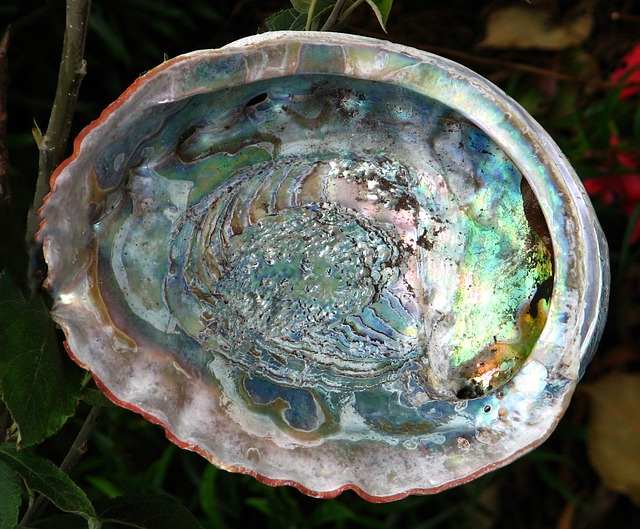
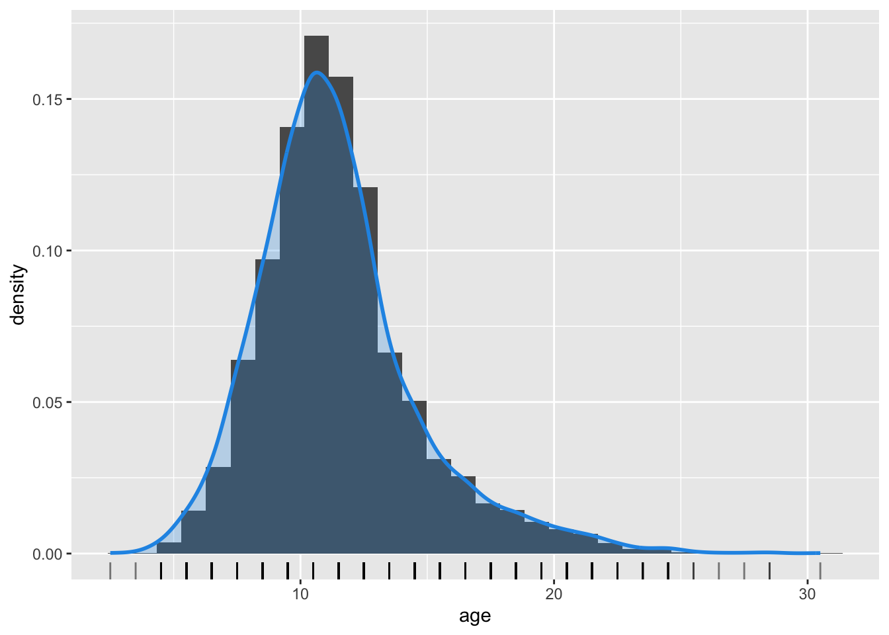
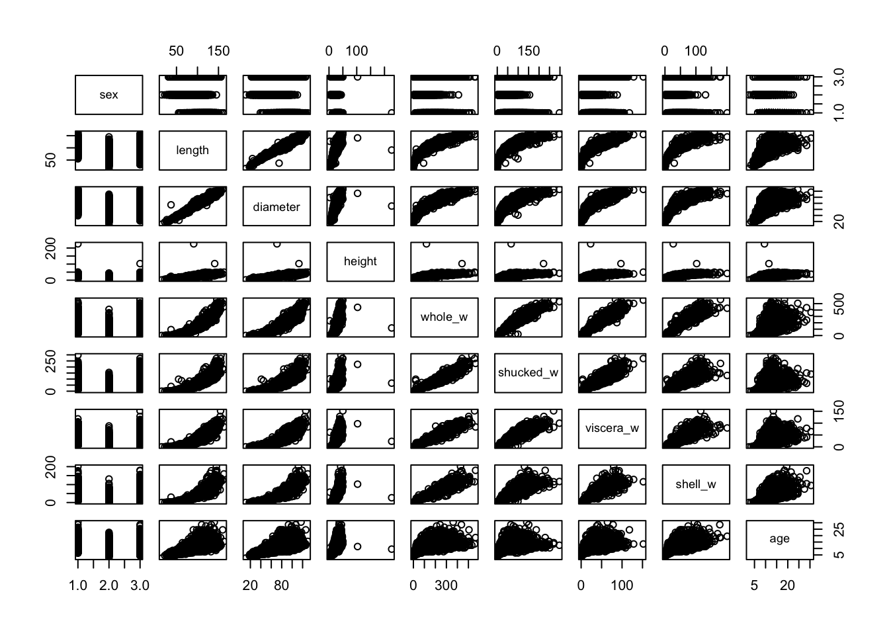
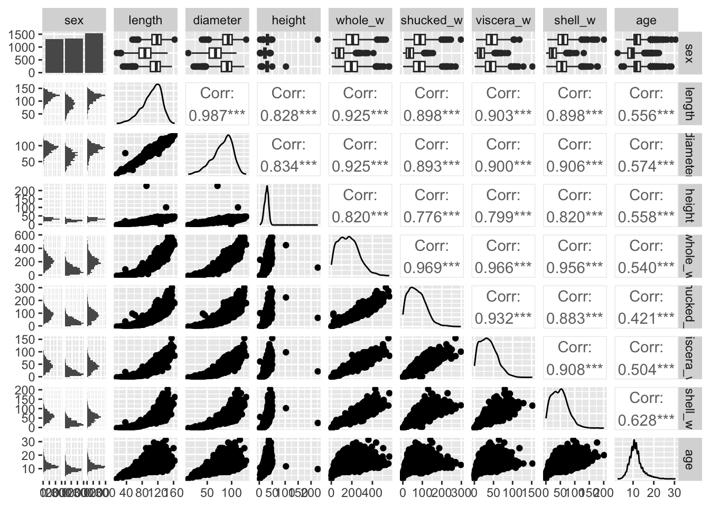
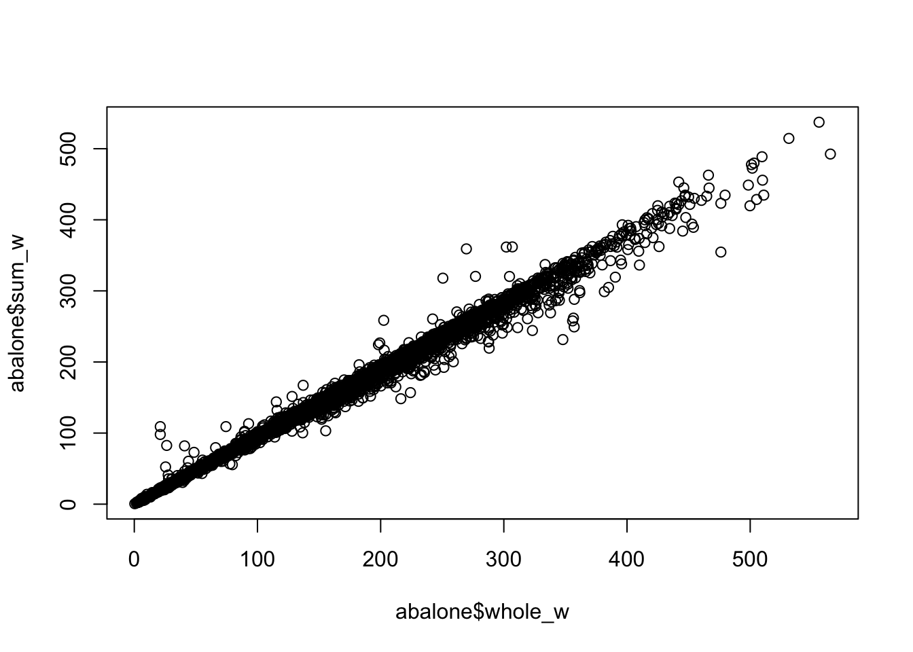
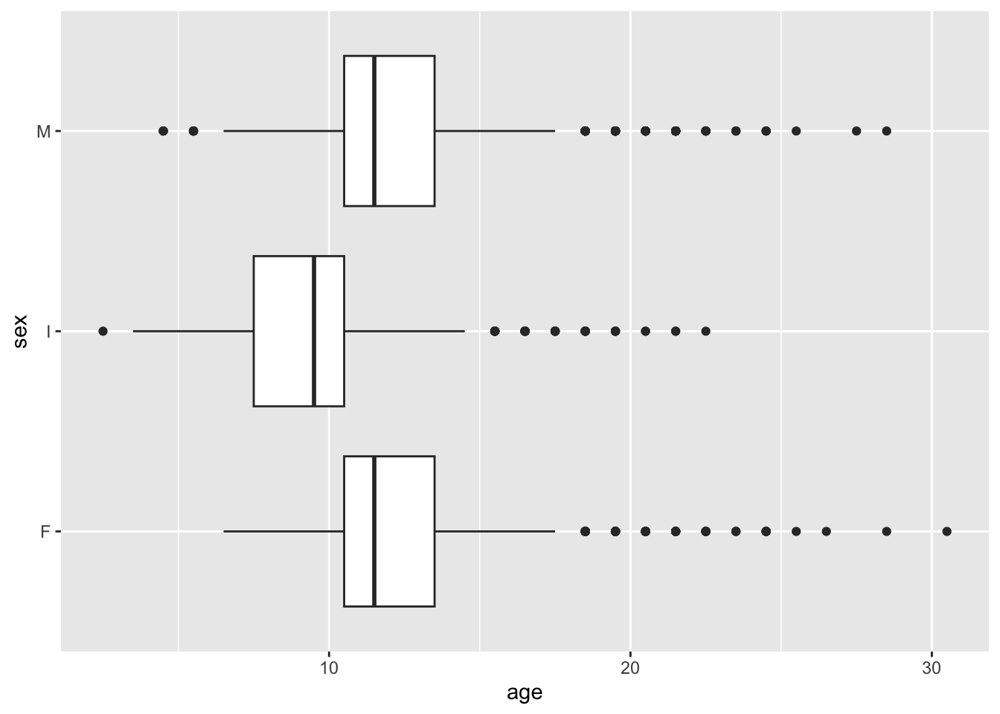
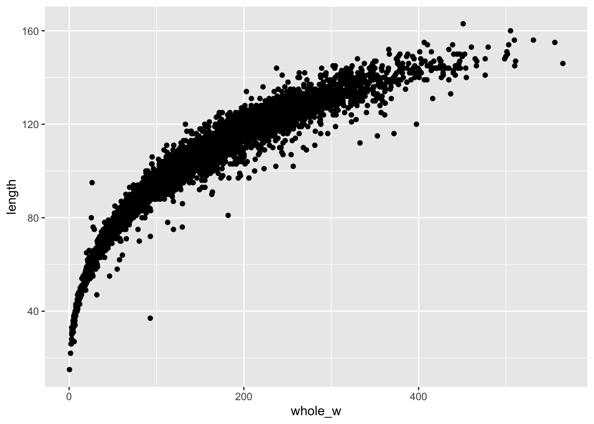
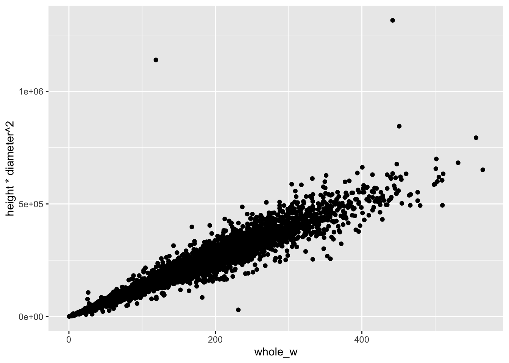
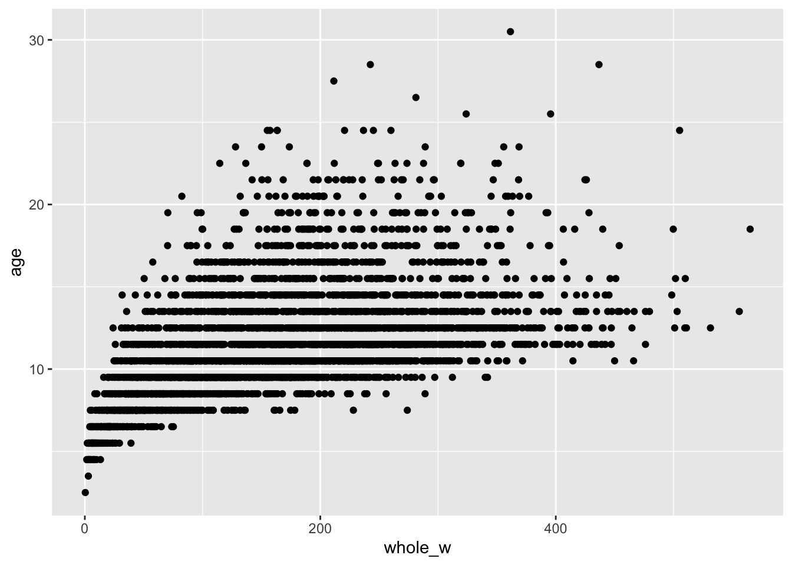

rm(list=ls())
abalone <- read_csv("data/abalone/abalone.data", col_names = FALSE)
names(abalone) <- c("sex", "length", "diameter", "height", "whole_w", "shucked_w", "viscera_w", "shell_w", "rings")GED-16: Análise de Regressão
AULA01: Prática (1o. semestre/2023)
Introdução
Abalone é um tipo de molusco que vive em águas marinhas costeiras em diversas regiões do globo. A concha do abalone apresenta tamanho que varia entre 10 a 25cm e sua coloração interior iridescente nacarada é muito valorizada na confecção de jóias e ornamentos; além disso, a carne do animal é considerada uma iguaria em muitos países. Devido ao seu alto valor comercial e consequente pesca excessiva, além da degradação de seu habitat pela ação humana, diversas espécies de abalone atualmente correm risco de extinção. Existem mais de 100 espécies de abalone ao redor do mundo, das quais cerca de 15 são produzidas por meio de aquicultura. Determinar a idade do abalone de maneira acurada é importante tanto em termos comerciais (o valor comercial do abalone está associado à sua idade) bem como em termos ambientais (condições ambientais podem afetar a saúde do animal). A idade do animal pode ser determinada a partir da contagem do número de anéis na concha, utilizando um microscópio, a partir de um procedimento delicado e trabalhoso.

Os dados disponíveis no arquivo data/abalone/abalone.data foram obtidos no UCI Machine Learning Repository e são bastante utilizados na investigação de métodos de Machine Learning. Tais dados foram coletados a partir do estudo original:
Warwick J Nash, Tracy L Sellers, Simon R Talbot, Andrew J Cawthorn and Wes B Ford (1994) “The Population Biology of Abalone (Haliotis species) in Tasmania. I. Blacklip Abalone (H. rubra) from the North Coast and Islands of Bass Strait”, Sea Fisheries Division, Technical Report No. 48 (ISSN 1034-3288).
O principal objetivo do projeto era determinar a idade do molusco a partir de medidas físicas do animal mais fáceis de serem obtidas. Os dados originais foram pré-processados no sentido de remover observações faltantes e os valores das variáveis contínuas foram dividos por 200. Há um total de 4177 observações coletadas para 9 variáveis:
sex: sexo do animal (M, F, I)length: maior comprimento da concha (mm)diameter: comprimento perpendicular àlength(mm)height: comprimento da carne da concha (mm)whole_w: peso do animal (g)shucked_w: peso da carne (g)viscera_w: peso das vísceras (g)shell_w: peso da concha (g)rings: número de anéis (a idade é obtida somando 1.5)
Mais informações a respeito dos dados podem ser obtidas no arquivo data/abalone/abalone.names.
Análise Exploratória de Dados
Conduza a análise exploratória da massa de dados abalone, a fim de compreender suas características principais.
Voltaremos a utilizar essa massa de dados em atividades futuras.
Começamos identificando a estrutura dos dados:
str(abalone)spc_tbl_ [4,177 × 9] (S3: spec_tbl_df/tbl_df/tbl/data.frame)
$ sex : chr [1:4177] "M" "M" "F" "M" ...
$ length : num [1:4177] 0.455 0.35 0.53 0.44 0.33 0.425 0.53 0.545 0.475 0.55 ...
$ diameter : num [1:4177] 0.365 0.265 0.42 0.365 0.255 0.3 0.415 0.425 0.37 0.44 ...
$ height : num [1:4177] 0.095 0.09 0.135 0.125 0.08 0.095 0.15 0.125 0.125 0.15 ...
$ whole_w : num [1:4177] 0.514 0.226 0.677 0.516 0.205 ...
$ shucked_w: num [1:4177] 0.2245 0.0995 0.2565 0.2155 0.0895 ...
$ viscera_w: num [1:4177] 0.101 0.0485 0.1415 0.114 0.0395 ...
$ shell_w : num [1:4177] 0.15 0.07 0.21 0.155 0.055 0.12 0.33 0.26 0.165 0.32 ...
$ rings : num [1:4177] 15 7 9 10 7 8 20 16 9 19 ...
- attr(*, "spec")=
.. cols(
.. X1 = col_character(),
.. X2 = col_double(),
.. X3 = col_double(),
.. X4 = col_double(),
.. X5 = col_double(),
.. X6 = col_double(),
.. X7 = col_double(),
.. X8 = col_double(),
.. X9 = col_double()
.. )
- attr(*, "problems")=<externalptr> Percebemos que as variáveis já possuem nomes explicativos. Porém, percebe-se que sex está com tipo char quando deveria ser Factor. Vamos também obter a idade, a partir do número de anéis do Abalone, e retornar os valores contínuos para suas escalas originais (multiplicar por 200).
abalone <- abalone %>% mutate_at("sex", as.factor)
abalone$age <- abalone$rings + 1.5
abalone$length <- abalone$length * 200
abalone$diameter <- abalone$diameter * 200
abalone$height <- abalone$height * 200
abalone$whole_w <- abalone$whole_w * 200
abalone$shucked_w <- abalone$shucked_w * 200
abalone$viscera_w <- abalone$viscera_w * 200
abalone$shell_w <- abalone$shell_w * 200Dessa forma, temos o sumário do conjunto de dados:
summary(abalone) sex length diameter height whole_w
F:1307 Min. : 15.0 Min. : 11.00 Min. : 0.0 Min. : 0.4
I:1342 1st Qu.: 90.0 1st Qu.: 70.00 1st Qu.: 23.0 1st Qu.: 88.3
M:1528 Median :109.0 Median : 85.00 Median : 28.0 Median :159.9
Mean :104.8 Mean : 81.58 Mean : 27.9 Mean :165.7
3rd Qu.:123.0 3rd Qu.: 96.00 3rd Qu.: 33.0 3rd Qu.:230.6
Max. :163.0 Max. :130.00 Max. :226.0 Max. :565.1
shucked_w viscera_w shell_w rings
Min. : 0.20 Min. : 0.10 Min. : 0.30 Min. : 1.000
1st Qu.: 37.20 1st Qu.: 18.70 1st Qu.: 26.00 1st Qu.: 8.000
Median : 67.20 Median : 34.20 Median : 46.80 Median : 9.000
Mean : 71.87 Mean : 36.12 Mean : 47.77 Mean : 9.934
3rd Qu.:100.40 3rd Qu.: 50.60 3rd Qu.: 65.80 3rd Qu.:11.000
Max. :297.60 Max. :152.00 Max. :201.00 Max. :29.000
age
Min. : 2.50
1st Qu.: 9.50
Median :10.50
Mean :11.43
3rd Qu.:12.50
Max. :30.50 Percebe-se que algumas observações possuem altura zero. Avaliando essas observações:
abalone[abalone$height==0,]# A tibble: 2 × 10
sex length diameter height whole_w shucked_w viscera_w shell_w rings age
<fct> <dbl> <dbl> <dbl> <dbl> <dbl> <dbl> <dbl> <dbl> <dbl>
1 I 86 68 0 85.6 41.3 17.2 23 8 9.5
2 I 63 46 0 26.8 11.5 5.7 70.1 6 7.5Obtemos duas observações que não fazem sentido (altura zero e pesos diferentes de zero). Podemos retirá-las do conjunto de dados.
abalone <- abalone[abalone$height!=0,]Assim, temos um sumário dos dados atualizados.
summary(abalone) sex length diameter height whole_w
F:1307 Min. : 15.0 Min. : 11.00 Min. : 2.00 Min. : 0.40
I:1340 1st Qu.: 90.0 1st Qu.: 70.00 1st Qu.: 23.00 1st Qu.: 88.45
M:1528 Median :109.0 Median : 85.00 Median : 28.00 Median :160.00
Mean :104.8 Mean : 81.59 Mean : 27.92 Mean :165.80
3rd Qu.:123.0 3rd Qu.: 96.00 3rd Qu.: 33.00 3rd Qu.:230.70
Max. :163.0 Max. :130.00 Max. :226.00 Max. :565.10
shucked_w viscera_w shell_w rings
Min. : 0.20 Min. : 0.10 Min. : 0.30 Min. : 1.000
1st Qu.: 37.25 1st Qu.: 18.70 1st Qu.: 26.00 1st Qu.: 8.000
Median : 67.20 Median : 34.20 Median : 46.80 Median : 9.000
Mean : 71.90 Mean : 36.13 Mean : 47.77 Mean : 9.935
3rd Qu.:100.40 3rd Qu.: 50.60 3rd Qu.: 65.75 3rd Qu.:11.000
Max. :297.60 Max. :152.00 Max. :201.00 Max. :29.000
age
Min. : 2.50
1st Qu.: 9.50
Median :10.50
Mean :11.44
3rd Qu.:12.50
Max. :30.50 Dado o sumário, analisaremos agora a distribuição de algumas das grandezas de interesse no conjunto de dados. Começaremos pela idade dos Abalones, a partir da qual pode ser construído o histograma abaixo, juntamente com a sua curva de densidade estimada. Pela análise destes, nota-se que há um grande número de Abalones com uma idade próxima a 10 anos, com os mais velhos podendo ter até próximo de 30 anos.
# Histograma de `age`
ggplot(abalone, aes(x = age)) +
geom_histogram(aes(y = after_stat(density))) +
# adiciona linha de densidade estimada (suavização)
geom_density(lwd = 1, colour = 4,
fill = 4, alpha = 0.25, bw = 0.6) +
# adiciona dispersão unidimensional de `age`
geom_rug(alpha = 0.5)
Pode-se, também, construir um conjunto de gráficos para analisar a relação entre cada uma das características do conjunto de dados. Nota-se, entretanto, que esse conjunto não conta com os valores de correlação das variáveis.
plot(abalone[,-c(9,9)])
Dessa maneira, pode-se, com base na figura anterior, construir a próxima, que conta com os valores de correlação entre as diferentes variáveis, bem como gráficos mais informativos relacionando o sexo dos Abalones com as suas outras características.
library(GGally)
ggpairs(abalone[,-c(9,9)])
Com base nesse apanhado geral de gráficos, pode-se realizar uma análise focada nas relações mais interessantes. Um desses casos consiste em comparar o valor do peso total do Abalone com os diferentes valores de pesos registrados posteriormente (whole, shucked, viscera e shell). Como pode-se constatar no conjunto de observações abaixo, a soma dos diferentes valores de peso nem sempre resulta no peso total registrado.
abalone[c(1,2,3),]# A tibble: 3 × 10
sex length diameter height whole_w shucked_w viscera_w shell_w rings age
<fct> <dbl> <dbl> <dbl> <dbl> <dbl> <dbl> <dbl> <dbl> <dbl>
1 M 91 73 19 103. 44.9 20.2 30 15 16.5
2 M 70 53 18 45.1 19.9 9.7 14 7 8.5
3 F 106 84 27 135. 51.3 28.3 42 9 10.5Assim, pode-se gerar o gráfico da variável whole_w versus a soma das variáveis shucked_w, viscera_w e shell_w. Bem como o valor de correlação das duas grandezas obtidas. Por fim, nota-se que este último é de aproximadamente 99.51%, um valor bastante alto.
abalone$sum_w <- abalone$shucked_w + abalone$viscera_w + abalone$shell_w
plot(abalone$whole_w, abalone$sum_w)
cor(abalone$whole_w, abalone$sum_w)[1] 0.9951057Podemos também analisar a distribuição da idade dos Abalones, o que é feito abaixo, através da geração de um boxplot. Nota-se, através deste, que 50% dos Abalones encontram-se na faixa entre 9 e 13 anos de idade. Além disso, existem vários outliers com idades superiores a 18 anos de idade.
# Boxplot de `age`
ggplot(abalone, aes(x = age, y = "")) +
# adiciona barras de erros
geom_errorbar(stat = "boxplot", width = 0.1) +
# adiciona boxplot
geom_boxplot () +
# adiciona dispersão unidimensional de `age`
geom_rug(alpha = 0.5) +
# adiciona rótulo aos eixos
labs(y = "", x = "age")
Pode-se também realizar a análise da distribuição de idades conforme o sexo do Abalone, para determinar se há uma tendência dos machos ou fêmeas terem uma expectativa de vida maior. Para tal, geram-se, novamente, boxplots da idade para cada um dos sexos. Não há grandes diferenças na distribuição de idades de machos e fêmeas. Nota-se, porém, que a grande maioria dos indivíduos de sexo não identificado são mais jovens do que os demais. Isso pode ser uma evidência de se existir uma dificuldade na identificação do sexo do Abalone quando este é mais jovem, sendo esta tarefa possivelmente mais fácil conforme estes envelhecem.
# Boxplots
ggplot(abalone, aes(x = age, y = sex)) +
geom_boxplot()
Ainda com base nos gráficos de relação entre as características, podemos analisar mais a fundo a relação entre o tamanho e o peso dos abalones. Tomando as variáveis whole_w e diameter, podemos percaber uma grande correlação entre essas variáveis.
ggplot(abalone)+
geom_point(aes(x=whole_w, y = diameter))
cor(abalone$whole_w, abalone$diameter)[1] 0.9254144Podemos também hipotetizar que os abalones tem densidade aproximadamente constante. Assim, analisando o gráfico entre whole_w versus height*diameter^2, encontramos um gráfico que lembra uma reta. Também podemos perceber que encontra-se uma correlação ainda maior que a do caso anterior.
ggplot(abalone)+
geom_point(aes(x=whole_w, y = height*diameter**2))
cor(abalone$whole_w, abalone$length*abalone$diameter**2)[1] 0.9685146Podemos hipotetizar também que abalones mais velhos sejam mais pesados. Ainda que exista alguma relação entre essas variáveis, parece que ela é mais forte quando os abalones são mais novos, porém quanto mais velhos eles ficam, mais dispersos ficam os pesos. Percebe-se uma correlação significativamente menor entre essas variáveis se comparados aos casos anteriormente analisados.
ggplot(abalone)+
geom_point(aes(x=whole_w, y = age))
cor(abalone$whole_w, abalone$age)[1] 0.5401508